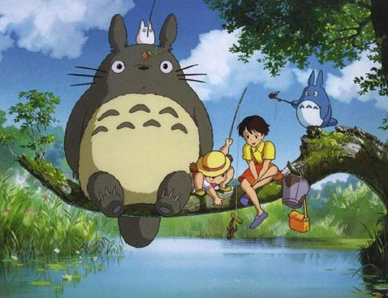

《龙猫》影评

接触宫崎骏的电影是从《龙猫》开始的，朋友从夜市上买回一个电影中龙猫巴士的玩具，让我开始喜欢上这部动画电影，喜欢上宫崎骏。
《龙猫》的开头就是明快活泼的，风和日丽的天气、生机勃勃的田园，让人的心马上暖和了起来。随着剧情的发展，你会发现，在《龙猫》的世界里，不论是人与人之间的关系，还是人和自然之间的关系，都是非常和谐美妙的。有趣的爸爸贤惠的妈妈懂事能干的小月活泼可爱的小梅，相互尊敬相互关爱！不仅是一家人相敬如宾，影片中的每个人都是彬彬有礼、充满爱心的。慈祥的老奶奶，还有印象特别深的小凯，好像暗恋小月，却害羞喜欢用蛮横的方式表达。
剧中的龙猫超级可爱，胖胖的圆滚滚的，模仿人类雨中打伞，跳舞祈求橡果子赶紧发芽，乘坐自己的龙猫巴士。我觉得是妹妹小梅让这部动画片轻松愉快起来，她可爱有时候调皮却很懂事。刚搬入新家的时候，她总是跟在姐姐屁股后面活蹦乱跳，是她最开始发现了龙猫却毫不惧怕，把龙猫当做朋友。
热爱他人、热爱生活、热爱自然，也许有一天，你也会看到在那郁郁葱葱的大树之上，有一只憨态可掬的龙猫，正露出齐刷刷的门牙朝你憨厚地笑着。
这是一部清新愉快纯洁温馨的电影，如果你觉得烦躁不安，它很快就会让你平静下来奥。

 《龙猫》
《龙猫》
 《天空之城》
《天空之城》
 《幽灵公主》
《幽灵公主》
 《千与千寻》
《千与千寻》